Firewall pfSense + Suricata IPS : Segmentation Réseau et Détection d'Intrusions
SOC & Défense · Ethical Hacking offensif/défensif · Kali Linux · Metasploitable2 · pfSense 2.7 · Suricata (mode IPS)
Ce projet illustre la chaîne complète d'un test d'intrusion confronté à une défense périmétrique active. Une cible volontairement vulnérable (Metasploitable2) est d'abord placée derrière un pare-feu pfSense segmentant le réseau en trois zones (WAN hostile, DMZ, LAN interne), puis Suricata est déployé en mode IPS sur l'interface WAN pour détecter et bloquer activement le trafic malveillant. L'objectif n'est pas seulement de configurer ces outils, mais de rejouer les mêmes attaques avant/après leur mise en place et d'expliquer précisément quel mécanisme — règle de pare-feu (port) ou signature Suricata (contenu) — bloque chaque tentative, ou pourquoi certaines passent malgré tout.
Environnement
Attaquant Kali Linux (WAN)
Cible Metasploitable2 (DMZ)
Pare-feu/IPS pfSense + Suricata
Mode IPS Legacy, Block Offenders
Règles custom 4 signatures
Exploits testés vsftpd, Samba usermap
Topologie Réseau Segmentée
Trois zones distinctes sont créées autour de pfSense : le WAN (10.10.10.0/24) où se trouve l'attaquant Kali, la DMZ (172.16.10.0/24) qui héberge la cible Metasploitable2, et le LAN (192.168.10.0/24) qui simule un réseau de clients internes légitimes. Tout le trafic inter-zones transite obligatoirement par pfSense : le sens WAN → DMZ est filtré service par service, et le sens DMZ → WAN est intégralement bloqué (anti reverse-shell).
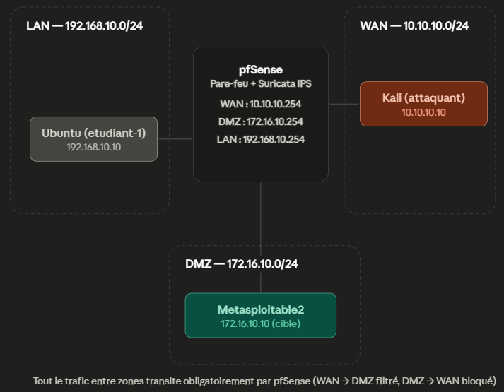
| Machine | Rôle | OS | Adresse IP | Réseau |
|---|---|---|---|---|
| kali-attaquant | Attaquant / Pentester | Kali Linux | 10.10.10.10 | WAN |
| metasploitable2 | Serveur cible vulnérable | Ubuntu / Linux | 172.16.10.10/24 | DMZ |
| pfSense | Pare-feu / IPS | pfSense 2.7 + Suricata | 10.10.10.254 / 172.16.10.254 / 192.168.10.254 | WAN + DMZ + LAN |
| etudiant-1 | Client légitime | Linux/Windows 10 | 192.168.10.10/24 | LAN |
Configuration de pfSense — Segmentation et Règles de Pare-feu
Mise en place du pare-feu comme point de passage obligé entre les trois zones, avec un jeu de règles minimal (allow-list) sur le sens hostile et un NAT sélectif pour exposer certains services de la DMZ.
5.1 — Installation et configuration initiale
Les trois interfaces sont assignées et adressées depuis la console pfSense : WAN (em0) → 10.10.10.254/24, LAN (em2) → 192.168.10.254/24, OPT1/DMZ (em1) → 172.16.10.254/24.
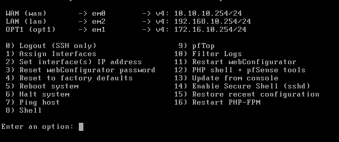
Le dashboard confirme la prise en compte des trois interfaces actives (WAN, LAN, DMZ) avec leurs adresses respectives.
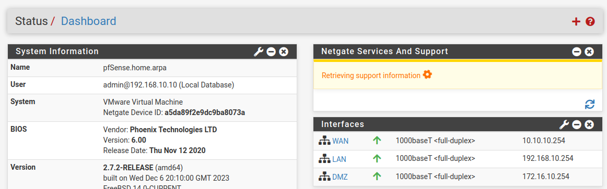
5.2 — Règles de pare-feu WAN → DMZ (réseau hostile)
Sur l'interface WAN, seuls trois services sont explicitement autorisés vers Metasploitable2 (HTTP, FTP, SSH) ; tout le reste est bloqué implicitement puis explicitement pour la démonstration.
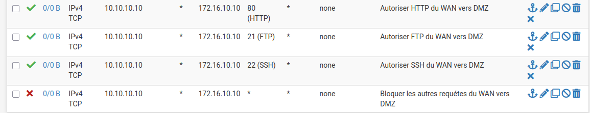
Vérification depuis Kali : le curl sur le port 80 aboutit (règle autorisée)...
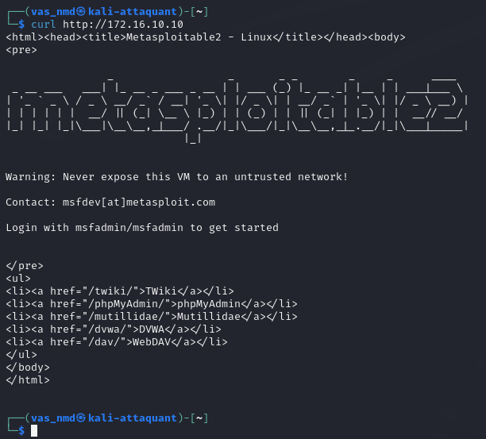
...un nmap ciblé confirme le port 80 ouvert...
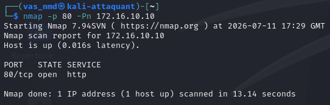
...tandis que le port 445 (SMB, non autorisé par la règle) apparaît filtered — le paquet est silencieusement rejeté par pfSense (drop), sans réponse RST qui aurait révélé un port fermé côté hôte.
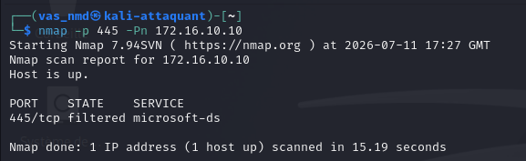
5.3 — Règles de pare-feu sur la DMZ
Dans l'autre sens, la DMZ est autorisée à joindre le LAN sur le port applicatif nécessaire (3306/MySQL), mais toute connexion initiée depuis la DMZ vers le WAN est bloquée — c'est la règle anti reverse-shell : même si Metasploitable2 est compromis, il ne peut pas rappeler l'attaquant.
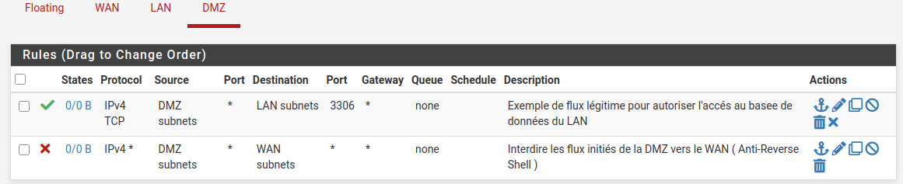
Vérification : depuis Metasploitable2, un ping vers Kali (10.10.10.10) échoue à 100% — la règle anti reverse-shell est bien appliquée.
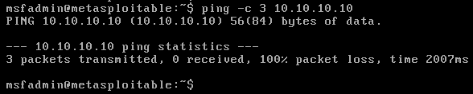
5.4 — NAT et redirection de ports
Deux règles de Port Forward exposent sélectivement des services de la DMZ sur l'IP WAN de pfSense, sans révéler directement l'adressage interne : WAN:8080 → 172.16.10.10:80 et WAN:2222 → 172.16.10.10:22.
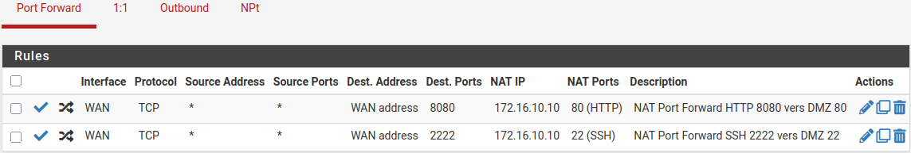
Vérification depuis Kali : une requête sur 10.10.10.254:8080 atteint bien Metasploitable2 via la redirection NAT.
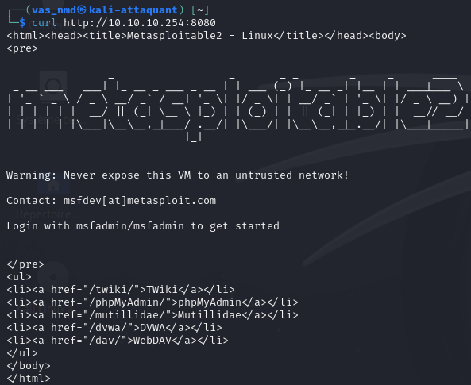
Bilan T5 : la segmentation impose une allow-list stricte en entrée (3 ports seulement) et un blocage total des connexions sortantes initiées par la DMZ, tout en gardant la possibilité d'exposer sélectivement des services via NAT — le tout validé par des tests actifs (curl, nmap, ping) depuis les deux zones.
Suricata IPS — Détection et Blocage Actif
Suricata est déployé non pas en simple IDS (détection passive) mais en mode IPS : les hôtes générant une alerte sont automatiquement bloqués au niveau du pare-feu, en plus d'être journalisés.
6.1 — Activation de l'inspection sur l'interface WAN
Suricata est activé sur l'interface WAN — c'est le point d'entrée du trafic hostile, donc l'endroit le plus pertinent pour intercepter les attaques avant même qu'elles n'atteignent la DMZ.
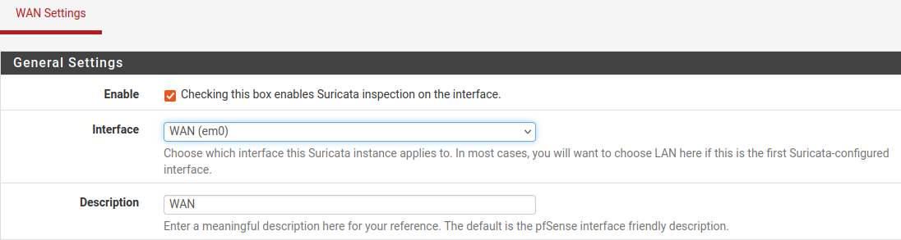
Les alertes sont envoyées vers le syslog système (facility LOCAL1, priorité NOTICE) pour centraliser la journalisation.
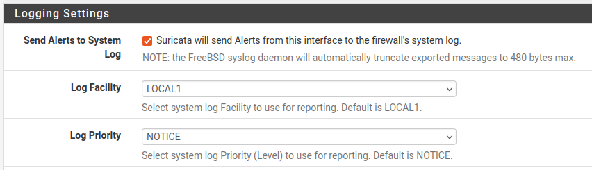
Le cœur du mode IPS est activé ici : Block Offenders (blocage automatique des hôtes générant une alerte), en Legacy Mode (inspection sur copie de paquets via PCAP), avec Kill States pour couper immédiatement les connexions établies de l'hôte bloqué.
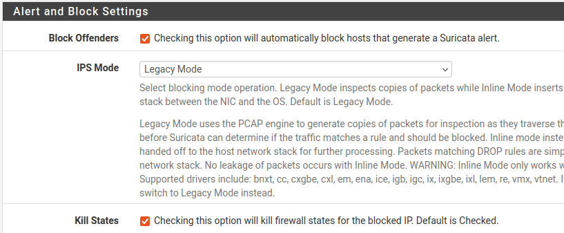
6.2 — Activation des règles (rulesets)
Plusieurs catégories du ruleset Emerging Threats Open sont activées, ciblant les familles de menaces pertinentes pour ce lab : scans, exploits, malware, SNMP.
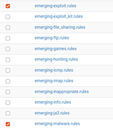
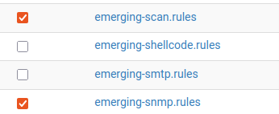
Les règles sont mises à jour avec succès depuis la source Emerging Threats Open.
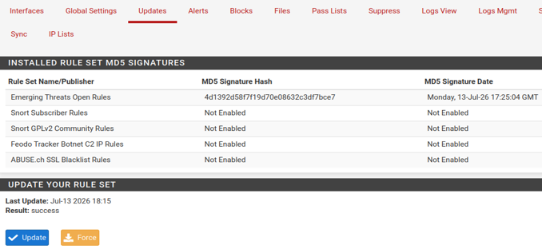
L'interface WAN apparaît active, en mode de correspondance AUTO et en LEGACY MODE.
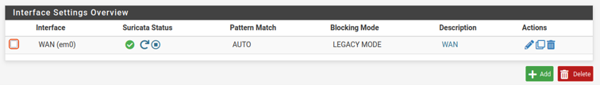
6.3 — Règles personnalisées et validation
Quatre signatures sur mesure sont ajoutées pour cibler précisément les attaques attendues dans ce lab : un scan Nmap SYN (seuil de 20 paquets SYN/3s), la backdoor vsftpd 2.3.4 (CVE-2011-2523, détection du motif ":)"), l'énumération SNMP avec la community public, et un seuil générique de scan de vulnérabilités.
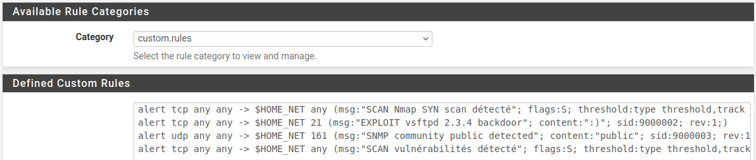
Chaque règle est ensuite testée individuellement contre l'interface WAN de pfSense (10.10.10.254) pour valider son déclenchement avant de passer aux tests réels sur la cible :
| Test | Commande | Alerte générée |
|---|---|---|
| Scan SYN | nmap -sS -p- --max-rate 100 10.10.10.254 | SCAN Nmap SYN scan détecté (SID 9000001) |
| Backdoor vsftpd | nping --tcp -p 21 --data-string ":)" 10.10.10.254 | EXPLOIT vsftpd 2.3.4 backdoor (SID 9000002) |
| SNMP public | echo "public" | nc -u -w2 10.10.10.254 161 | SNMP community public detected (SID 9000003) + GPL SNMP access |
| Scan de vuln. | nmap -sS -p1-100 --max-rate 500 10.10.10.254 | SCAN vulnérabilités détecté (SID 9000004) |
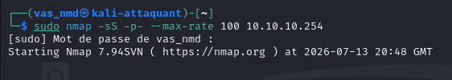
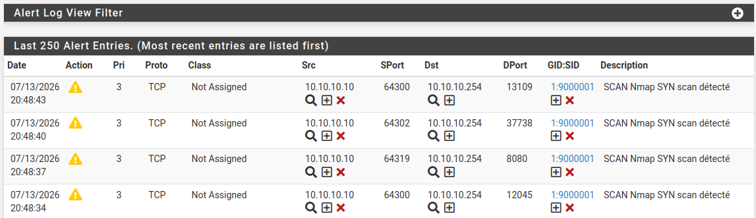
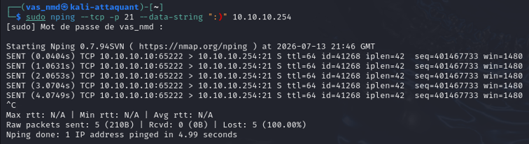
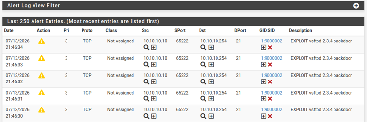
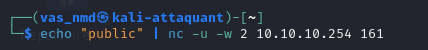
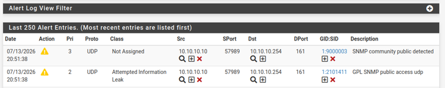
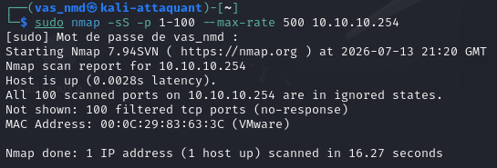
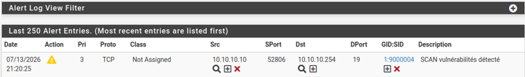
Bilan : les 4 règles personnalisées se déclenchent correctement contre l'interface WAN elle-même, qui ne répond d'ailleurs à aucune requête directe (100 ports scannés, tous filtrés) — signe d'un pare-feu bien durci. Suricata est prêt à être confronté à de vraies tentatives d'exploitation sur la cible réelle en DMZ.
Rejeu des Scans sur la Cible avec pfSense Actif
Les mêmes techniques de reconnaissance sont rejouées, cette fois contre la vraie cible en DMZ (172.16.10.10), à travers pfSense. L'objectif est de vérifier si le pare-feu et Suricata suffisent à masquer la surface d'attaque, et de capturer systématiquement le log Suricata correspondant à chaque test.
Scan A — SYN scan complet (nmap -sS -p-)
Sans réponse au ping ICMP (-Pn nécessaire), le scan confirme les 3 ports autorisés par la règle WAN → DMZ : 21, 22 et 80.
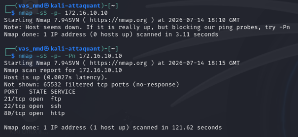
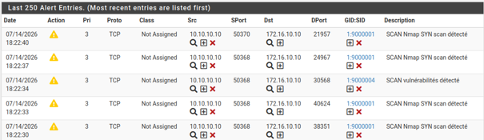
Scan B — Détection de version/OS (nmap -sV -O)
Le scan de version révèle les mêmes services que sans pare-feu (vsftpd 2.3.4, OpenSSH, Apache) — pfSense filtre les ports, pas le contenu des bannières des services qu'il laisse volontairement passer.
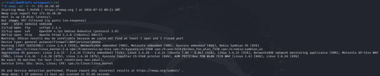
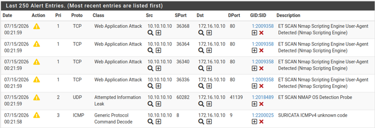
Scan C — Scripts de vulnérabilités (nmap --script vuln)
Le scan NSE vuln s'exécute sur les 3 ports ouverts uniquement (les autres restant filtrés) et tente plusieurs vérifications HTTP (CVE-2017-1001000, TRACE, DOM-based XSS, file-upload) sur Mutillidae.
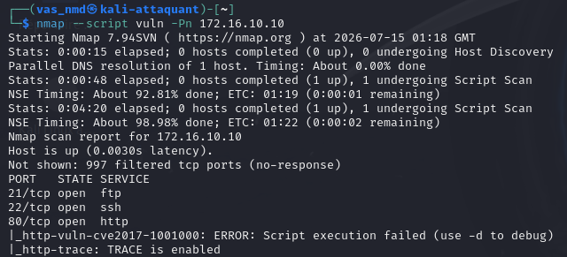
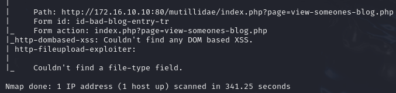
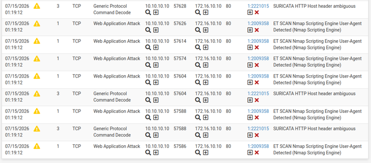
Scan D — Énumération SNMP (onesixtyone)
Un balayage de communities SNMP est lancé sur le port 161/UDP, non filtré par la règle WAN → DMZ (celle-ci ne visait que 21/22/80, mais UDP/161 n'est pas explicitement bloqué non plus).
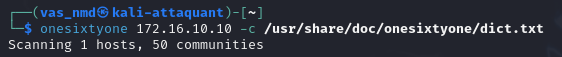
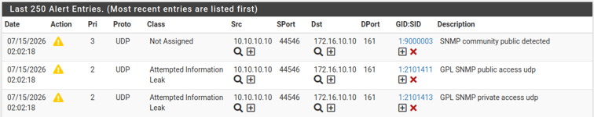
Scan E — Énumération SMB (enum4linux -a)
Contrairement au SNMP, l'énumération SMB échoue entièrement : les ports 139/445 ne sont pas dans l'allow-list WAN → DMZ, donc bloqués en amont par le pare-feu avant même d'atteindre Metasploitable2.
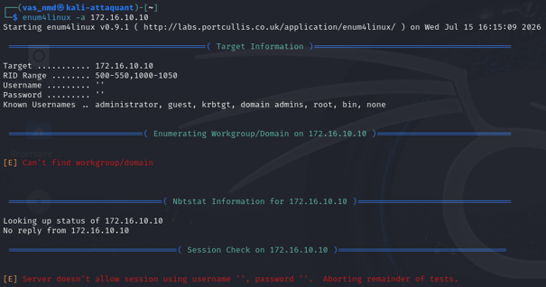
Scan F — Audit web (nikto)
Le port 80 étant explicitement autorisé, Nikto s'exécute sans restriction et remonte de nombreux problèmes de configuration (en-têtes manquants, module mod_negotiation, répertoires listables, TRACE activé) — le firewall ne protège pas contre les faiblesses applicatives d'un service qu'il autorise.
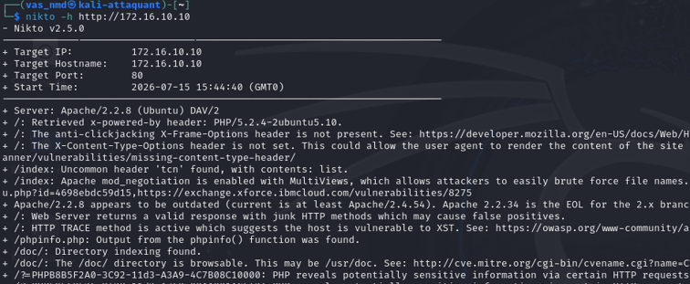
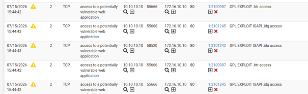
Bilan : pfSense réduit drastiquement la surface visible (3 ports TCP au lieu de 20+ en Partie 1), mais les services explicitement autorisés (HTTP, FTP, SSH) restent pleinement auditables — versions, vulnérabilités web, bannières. Suricata, de son côté, journalise la quasi-totalité de l'activité de reconnaissance, autorisée ou non, apportant une visibilité que le filtrage de ports seul ne donne pas.
Tentatives d'Exploitation avec pfSense Actif
Les deux exploits utilisés en Partie 1 sont rejoués face à la défense complète. Chaque tentative permet d'identifier quel mécanisme — règle de pare-feu (port fermé) ou signature Suricata (contenu détecté) — est responsable de l'échec, ou si aucun des deux n'intervient.
A — exploit/multi/samba/usermap_script (port 139)
Le module cible le service Samba sur le port 139/TCP. Or ce port ne fait partie d'aucune règle d'autorisation WAN → DMZ : l'exploit échoue immédiatement, la connexion n'aboutissant jamais.
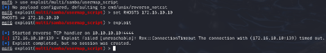
Point clé : le journal d'alertes Suricata reste vide pour cette tentative — aucune signature ne se déclenche.
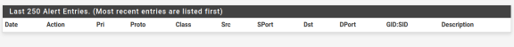
Mécanisme de blocage : règle de pare-feu uniquement. Le port 139 est fermé par pfSense avant même que le paquet n'atteigne la cible — Suricata ne voit donc rien à signaler, puisqu'aucun trafic applicatif Samba ne circule réellement.
B — exploit/unix/ftp/vsftpd_234_backdoor (port 21)
Le port 21 étant explicitement autorisé, la connexion FTP s'établit (bannière 220 reçue, USER envoyé), mais aucune session shell n'est obtenue.
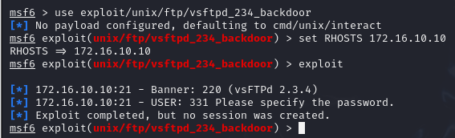
Cette fois, Suricata détecte bien le motif ":)" caractéristique de la backdoor et journalise deux alertes.
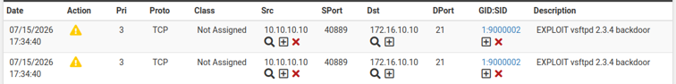
Conséquence du mode IPS : l'IP de Kali est automatiquement ajoutée à la liste des hôtes bloqués par Suricata (avec l'historique des règles précédemment déclenchées : scans Nmap, sondes SNMP...).
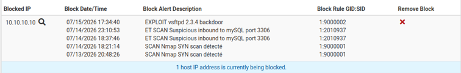
Preuve du blocage total : même le pare-feu WAN de pfSense (10.10.10.254) ne répond plus du tout au ping depuis Kali.
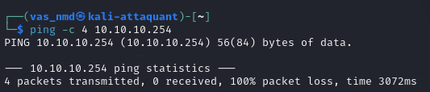
Mécanisme de blocage : signature Suricata (port pourtant autorisé). Le pare-feu laisse passer le trafic FTP légitime, mais Suricata reconnaît le contenu malveillant et bloque activement la source — la session échoue par coupure de l'état de connexion (Kill States), pas par filtrage de port.
C — Tentative de contournement (changement de port, LPORT 8080)
Conformément à la consigne, le module Samba est relancé avec un LPORT différent (8080) pour tester si un port de sortie non standard permettrait de contourner un éventuel filtrage applicatif.
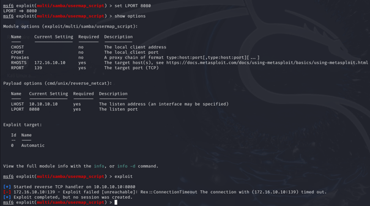
Le contournement échoue — et pas pour la raison attendue. Changer le LPORT ne change rien : le module continue de cibler le port 139 côté cible (RPORT, non modifié), toujours fermé par la règle WAN → DMZ. De plus, à ce stade, l'IP de Kali est déjà blacklistée par Suricata suite au test B : le blocage par IP source rend inopérant tout contournement basé sur le port, qu'il s'agisse du port de la cible ou du port d'écoute local de l'attaquant. Les deux mécanismes de défense (règle de port + blocage d'IP) sont donc complémentaires : même si l'un était contourné, l'autre resterait actif.
Tableau Comparatif Avant / Après pfSense
Synthèse de l'ensemble des techniques testées, avec le résultat obtenu sans défense (Partie 1, connexion directe) puis avec pfSense + Suricata actifs (Partie 2), et le mécanisme précis expliquant le changement de comportement.
Preuve pour la ligne 8 (MySQL) : la connexion directe au port 3306 échoue...
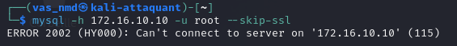
...après plusieurs tentatives ayant généré des alertes Suricata de trafic suspect vers ce port.
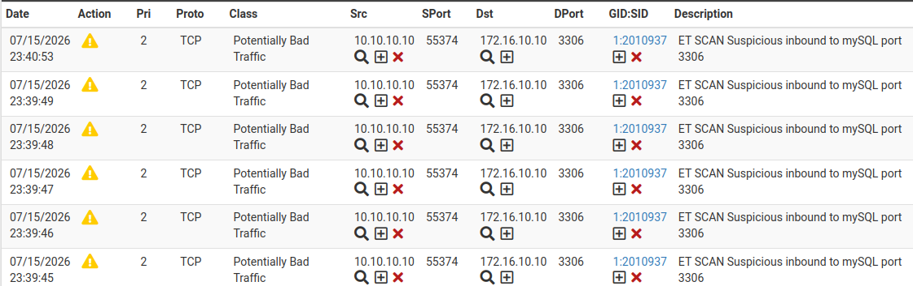
| # | Technique | Sans pfSense | Avec pfSense | Mécanisme de blocage |
|---|---|---|---|---|
| 1 | nmap SYN scan (-sS) tous ports | 20+ ports ouverts visibles | 3 ports visibles (21/22/80) | Règle de pare-feu (allow-list WAN→DMZ) + alerte Suricata (seuil SYN) |
| 2 | nmap version scan (-sV) sur ports autorisés | Bannières exactes révélées | Bannières identiques révélées | Aucun — le firewall ne filtre pas le contenu des services autorisés |
| 3 | Énumération SMB (enum4linux, 139/445) | Users, shares, RID énumérés | Échec total, aucune réponse | Règle de pare-feu — ports 139/445 hors allow-list |
| 4 | Énumération SNMP (onesixtyone, 161/UDP) | Community "public" trouvée | Community trouvée, mais tracée | Aucun blocage — port UDP non filtré ; détecté et journalisé par Suricata |
| 5 | Nikto scan HTTP (port 80) | Toutes vulnérabilités remontées | Résultats identiques | Aucun — HTTP autorisé, Suricata journalise mais ne bloque pas ce trafic web légitime en apparence |
| 6 | exploit/multi/samba/usermap_script | Session shell obtenue | Échec, connexion refusée | Règle de pare-feu uniquement — aucune alerte Suricata (port 139 fermé en amont) |
| 7 | exploit/unix/ftp/vsftpd_234_backdoor | Session shell obtenue | Échec, pas de session | Signature Suricata (contenu ":)") — port 21 pourtant autorisé par le firewall |
| 8 | Connexion MySQL directe (port 3306) | Connexion root sans mot de passe possible | ERROR 2002, connexion refusée | Règle de pare-feu — port 3306 hors allow-list WAN→DMZ ; alertes ET SCAN mySQL |
| 9 | VNC brute force (port 5900) | Port accessible, brute force possible | Port fermé, aucun accès | Règle de pare-feu — port 5900 hors allow-list |
| 10 | Reverse shell Metasploitable2 → Kali | Connexion sortante réussie | Bloqué systématiquement | Règle DMZ→WAN explicitement interdite (anti reverse-shell) |
Lecture du tableau : deux mécanismes indépendants et complémentaires expliquent chaque ligne. Le pare-feu filtre par port (lignes 1, 3, 6, 8, 9, 10) : une allow-list stricte en entrée et une interdiction totale des connexions DMZ→WAN neutralisent la majorité des techniques classiques, y compris un exploit entier (Samba) sans que Suricata n'ait même à intervenir. Suricata filtre par signature de contenu (ligne 7) et journalise systématiquement (lignes 4, 5) même quand il ne bloque pas — sa valeur ajoutée apparaît précisément là où le pare-feu ne peut rien faire : un port explicitement autorisé (21/FTP) mais exploité malicieusement. Aucun des deux mécanismes seuls n'aurait suffi : le pare-feu aurait laissé passer l'exploit vsftpd, et Suricata seul (sans blocage de ports) aurait laissé la surface d'attaque bien plus large en entrée.
Conclusion
Ce lab démontre, sur un cas d'usage complet d'attaque/défense, que la segmentation réseau et l'inspection de contenu répondent à deux problèmes différents et complémentaires. pfSense réduit mécaniquement la surface d'attaque exposée (allow-list stricte, blocage des connexions sortantes non désirées), neutralisant à lui seul des vecteurs entiers comme l'exploitation SMB ou un éventuel reverse-shell. Suricata en mode IPS comble l'angle mort du premier : les services volontairement exposés (ici FTP, HTTP, SSH) restent une surface d'attaque légitime, et c'est l'inspection de signature — couplée à un blocage automatique par IP source — qui neutralise l'exploitation active d'un service pourtant autorisé, comme la backdoor vsftpd. La tentative de contournement par changement de port illustre bien les limites de chaque mécanisme pris isolément : un pare-feu mal configuré resterait vulnérable à un port non filtré, mais un blocage par IP source rend cette faille sans effet une fois la source identifiée comme hostile. Une défense périmétrique robuste repose donc sur la superposition de ces deux couches, et non sur l'une au détriment de l'autre.